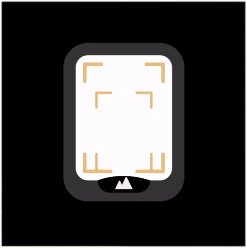

お知らせ
- 改題しました。(2024/06/18)
- PENTAX の新しい公式動画を見ての脳内垂れ流しを追加しました。(2024/06/18)
- PENTAX 17 のリーク画像を見ての脳内垂れ流しを書きました。(2024/06/10)
PENTAX からわりと詳細な情報が動画で公開
2024 年 6 月 18 日に PENTAX フィルムカメラプロジェクトの新しい動画が公開されました。以下はそのポイントです。
- 最初にまとめてしまうと
- フルオート前のフィルムカメラを知っていたら説明書は不要かも (でも必ず読め)
- 懐かしの操作感 (遊び心)
- 細かい気配り
- AOCO マーク！！< 一番大事 (笑
- スペックは日本時間で 6 月 10 日にリークされた情報通り
- 露出はフルオートのため、前回の自分のピント合わせの妄想は忘れよう (ページ下部に残してますけど)
- 予想よりでかい
- 上部はマグネシウム製
- ボディ本体は軽量化のために樹脂製
- 以下によりフィルム感度設定はマニュアルのみだと思われる
- DXコード対応に関する言及がない
- 動画内で iso 感度はダイアルで設定する説明がされている
- 対応フィルム感度は 50 から 3200 の間
もちろん露出補正ダイヤルもついてる。
ダイヤルで ISO を設定するのでやりたければ増感現像も可能 (なはず)
- 露出モード
- フルオート (青字 AUTO)
- 昼光モード (白字)
- プログラムオート (P マーク)
- スローシャッターモード (🌙 マーク)
- 絞り開放優先モード (BOKEH マーク)
- バルブ (B マーク)
- ストロボモード (黄色字)
- プログラムオート (P マーク)
- スローシャッターモード (🌙 マーク)
- リモートスイッチをつなげてシャッターを押せる
- フォーカスは見慣れたゾーンフォーカス用アイコンで設定できる
昔はテーブルフォトとマクロのアイコンなんてなかったけど。このあたりは今どきのカメラらしい。
- ファインダー内にフォーカス設定が見える工夫

ゴテゴテ情報を見せないところも、いかにも PENTAX っぽい。
- ハンドストラップの長さはピントがシビアにならざるを得ない近接撮影時に役立つ、つまり機能上の意味がある
- フィルムカメラに必須だったポケット部分も
- 電池ボックスはコインでネジを回して開ける (ネジを紛失しないよう注意。撮影場所での非常時はホムセンに駆け込めば応急的になんとかなりそう)
- 電池は CR2
動画ではパナの電池だけど、CR2 であれば別にパナでなくてもいいはず。
以下公式動画
TKO さん熱い！！動画を見ていて、このカメラに携わった人たちだけでなく、昔からフィルムカメラに携わってきた沢山の人のことを想って、途中から柄にもなく目頭が熱くなってしまった。
以下使用説明動画
PETNAX 17 リーク画像を見ての脳内垂れ流し
以下 Nostr にポストした脳内の垂れ流し。
脳の初期反応
- PENTAX auto 110 をかっこよくしたデザインっぽくて、自分は好き
- 手が届く価格なら欲しいかも
- ハーフサイズカメラは親父の OLYMPUS PEN で慣れてるので平気
- ピントは昔のゾーンフォーカスとは目盛りがちと違う
- DoF カリキュレーターとかスマホのアプリでリあるので、仮にリーク画像の通りのメモリでもピント合わせは困らなさそう
- レンズがせり出したりしないことを望む。ファインダーの位置がレンズの真上なので、レンズがせり出すとファインダーの視野がケラレる
- でもノーファインダーで撮るのも面白そう
- 若者向けということだけど、スナップを撮る人も使いたくなるんじゃなかろうか
- 関係ないけどフィルムは現行品だと Fomapan 100 が好き (コントラストが強く出るので黒つぶれや白飛びはしやすい)
- でもハーフサイズなので現行品なら ACROS かKodak T-MAX がいいだろうなぁ
ピント合わせについて
DoF カリキュレーターなんて面倒なもん使いたくねーよ、って人は絞り込んでパンフォーカスにして撮るのがお勧め。
とはいえ 25mm レンズでハーフサイズ、開放 F3.5 で無限遠が出ることから逆算してみると絞り開放でも無限遠にピントを合わせると Subjetct Distance 8.5m で、4.3m からパンフォーカスが得られる計算となった。
むろん無限遠の目盛りでの Subject Distance がどれくらいの距離に設定されているかはメーカーに問い合わせてみないとわからない。
もし上記の想定が正しいとするなら、25mm は 35mm 換算で約 36mm なので、記念撮影などで数人を撮るとなったら 5m は離れると思うので、記念撮影的なものであればフィルム感度を問わず無限遠で撮ればピンぼけに泣くことはまずなさそう。
他の設定で概算してみたのだけど以下のようになった。
- ピントを 3m に設定
-
F11 まで絞れば 1.45m からパンフォーカス
- ピントを 4m に設定 (目盛りはないが)
-
F8 まで絞れば 2m からパンフォーカス
- ピントを無限遠に設定
-
絞り開放 F3.5 で 4.3m からピンフォーカス (Subject Distance を 8.5m とする予測値)
ピント合わせで頭を使いたくない人のためのまとめ
理論上はこうなる。
- 約 5m からパンフォーカスになればよい場合はピントを無限遠にすれば良い。絞りは開放でもいけると予想。
- あとは (頭を使いたくないなら) パンフォーカスとかは諦めて、写したいものとの距離にピントを設定する。
もう少しパンフォーカスで攻めたいとき。
- 2m からパンフォーカスになれば良い場合はピントを 4m (目盛りがない) にし、F8 まで絞る。
- 1.4m からパンフォーカスになればよい場合はピントを 3m にし、F11 まで絞る。
フィルムについて
もちろん ISO 感度の高いフィルムを使ったほうが絞り、シャッタスピードともに有利になる。
付録 : 無限遠の Subject Distance を 8.5m としたときの Near Forcus
上記条件におけるピントがあう理論上の最短距離。
- F3.5 : 4.24m
- F5.6 : 3.35m
- F8.0 : 2.68m
- F11 : 2.09m
- F22 : 1.19m
{kind=link}
{kind=link}
{kind=link}
{kind=link}
{kind=link}
{kind=link}
{kind=link}
{kind=link}
{kind=link}
{kind=link}
{kind=link}
{kind=link}